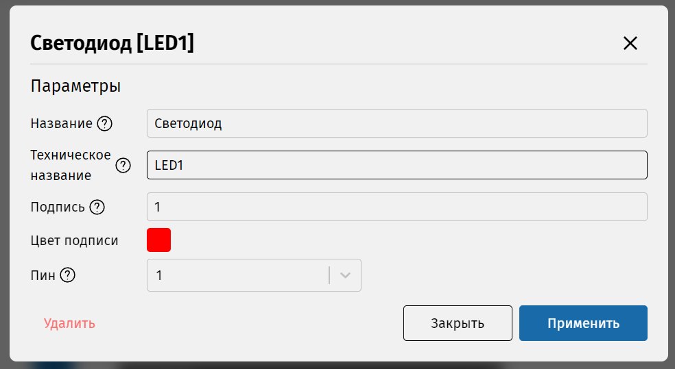

Для того, чтобы машина состояний чем-то управляла, нужно обозначить, с чем она будет работать. А именно, добавить компоненты. Можно привести аналогию: схема – это сценарий пьесы, а компоненты – это актёры, которые отыгрывают в пьесе свои роли. Без актёров нет выступления.
Добавим компонент. На боковой панели выберите раздел «Диаграмма» (второй значок в левой части IDE), далее в открывшейся вкладке нажмите на значок в виде плюса, который находится напротив заголовка «Компоненты».
Появится окно выбора компонента. Рассмотрите список компонентов и прочтите их описания. Мы будем управлять светодиодом, поэтому нам точно понадобится компонент LED. Выберите его и нажмите «Добавить».
Компонент появится в списке в боковой панели, и теперь его можно использовать на схеме. Но кроме светодиода нам нужен компонент, который позволил бы отсчитывать время. Добавьте его на схему таким же образом. Это компонент Timer.